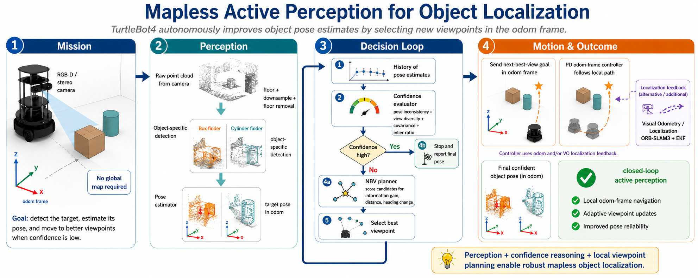
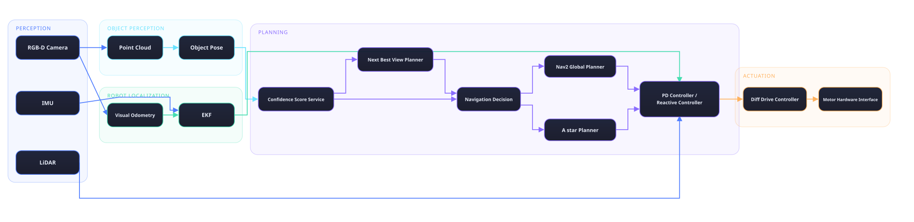

Active Perception for Object Localization
A TurtleBot4 system that does not just take one picture and guess. It estimates a target object pose from RGB-D data, scores how much it trusts that estimate, and moves itself to a better viewpoint whenever it is not confident enough, all while Nav2 handles the actual driving.
Coursework foundations
This project sits on top of a full semester of ROS 2 assignments: publisher and subscriber patterns, TF2 frame broadcasting, reactive LiDAR obstacle avoidance, point cloud based object detection, path planning and control, and Bayes filter tuning for sensor and motion models. Those assignments are what made a closed loop system like this buildable in the first place, and they live in a separate coursework repository if you want to see the fundamentals on their own.
Mission
The mission is to improve object pose estimation by pairing a next best view selection strategy with a confidence scoring algorithm, rather than trusting whatever the first observation happens to return. Given a capable navigation layer, that loop works whether or not a map is available.
With a map, Nav2 handles global and local planning to reach each requested viewpoint directly. Without one, the robot falls back to visual odometry for localization and a local A star planner working in the odometry frame, so it can still move toward a chosen viewpoint with no prebuilt map to lean on. Either way, the outer loop is the same: process the raw point cloud, detect the object through geometric feature finding computed directly on that raw data, decide how much to trust the resulting pose estimate, and if that trust is not high enough, move to a better view and try again.

System architecture
Image data splits by what each stream is good for. RGB feeds visual odometry, which only needs texture and motion, not depth. RGB-D feeds object detection, which needs the extra depth channel to build the point cloud everything downstream depends on.
Object detection publishes its processed point cloud to two services at once: a pose estimator service, which returns a pose estimate and a confidence score, and a next best view planner service. An orchestrator node ties the two together. It asks the pose estimator for an estimate and a confidence value, and only if that confidence is low does it go on to ask the nbv planner service for the next viewpoint. Whichever viewpoint gets chosen becomes a Nav2 goal, and once the robot arrives, the whole loop runs again.
- RGB to VO, RGB-D to detection
- Point cloud processing
- Pose estimator service
- Confidence check
- NBV planner service
- Nav2 goal

Perception
Two detection nodes, one for cylinders and one for boxes, share a common preprocessing pipeline: spatial filtering, voxel downsampling, and floor removal. The box detector was the one that needed real iteration. An early PCA only approach was not reliable enough, so the final version filters candidate points with a color model tuned for cardboard, forms clusters, and fits an upright box by checking footprint and height, rejecting clusters that fail basic geometric sanity checks. A pose estimator then turns the segmented cloud into a centroid and orientation in the odometry frame.
Confidence and next best view
A confidence evaluator watches a short history of pose estimates and scores four things: positional variance, yaw variance, mean point count, and mean anisotropy ratio. If that score clears the threshold, the robot stops and trusts the estimate. If not, a next best view planner samples candidate viewpoints around the target, scores them by radius error, travel distance, and heading change, and hands the best one to Nav2 as a new goal.
Localization with or without a map
When a map is available, Nav2 owns both global and local planning to each requested viewpoint. When it is not, robot motion is estimated with ORB SLAM3 stereo visual odometry on the onboard OAK D camera, fused with the IMU in an EKF, and a local A star planner works directly in the odometry frame to reach the next best view. Either path ends the same way, at a new viewpoint, ready for perception to try again. The visual odometry side of this is also the part of the system that ended up teaching the most, covered in the results section below.
Results and honest limitations
The headline finding was not a success metric, it was a diagnosis. Comparing the visual odometry path against wheel odometry on recorded runs showed strong agreement on straight segments and a clear divergence on curved ones.
- Straight path error about 0.05 m Peak near 0.09 m over the 0 to 30 second window
- Curved path error about 0.18 m Peak near 0.24 m over the 30 to 70 second window
- Left/right camera offset about 33 ms Median pairing error across the stereo stream
The root cause traced back to hardware, not algorithms: the left and right stereo images were arriving roughly 33 milliseconds apart. That is enough offset to hurt stereo depth matching during motion, which is exactly when accurate depth matters most. Two pairing strategies, frame to frame and timestamp based, both degraded once that offset grew.
Other failure modes worth naming rather than hiding: point clouds did not publish automatically and needed explicit handling in the TurtleBot4 bringup stack, fast turns introduced motion blur that thinned out stable feature matches, and low texture scenes weakened tracking further. The mitigation path was practical rather than clever: pair frames by timestamp, tighten the sync tolerance, and record bags directly on the robot to avoid losing data over the network.